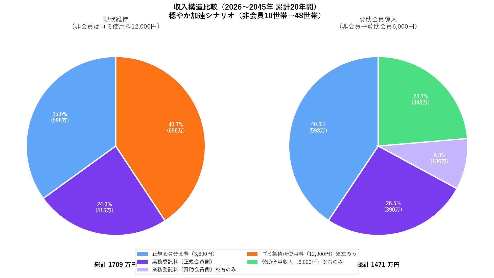

| 普通会員 （現状） |
賛助会員 （新設提案） |
非会員 （現状） |
|
|---|---|---|---|
| 年間負担 | 3,600円 | 6,000円 | 12,000円 |
| 班長義務 | ○（必須） | ×（免除） | × |
| 回覧（行政情報） | ○ | ○ | ×（遮断） |
| ゴミ集積所 | ○ | ○ | ○ |
| 集会所使用 | ○ | ○ | ×（高額） |
| 発言権（総会、アンケート） | ○ | ○ | × |
| 市の委託料 (1,900円 + 5万円/会員数) |
対象 | 対象 | 対象外 |
| 項目 | 金額 |
|---|---|
| ゴミ集積所の実費（設備償却費のみ） | 約744円/年 |
| 実費（清掃等含む推定） | 744〜2,000円/年 |
| 非会員への請求額 | 12,000円/年 |
| 差額（意味の怪しい金額） | 10,000〜11,256円/年 |
非会員は2018年の1世帯から2025年の10世帯へ（7年間で10倍）。
このまま穏やかに増加すると、20年間で累積696万円の負担が発生します。

左（現状維持）: ゴミ集積所使用料（橙、41%）が最大の収入源
→ 発言権のない人の負担が、全収入の4割以上を占める
右（賛助会員導入）: 全員が応分の負担
→ 賛助会費（緑、24%）+ 委託料（紫系、36%）= 全員が地域協力の担い手に
予測の不確定性: 非会員の増加速度は自治会運営の仕方に依存します。役員負担の軽減や透明性向上で抑制できる可能性もありますが、「これ以上は増えない」という楽観的想定は危険です。危機管理として、あえて多めに想定して備える必要があります。
賛助会員枠の必要性: 自治会運営の安定性確保のため、賛助会員数に上限（枠）を設定します。例えば「賛助会員数が正会員数の30%を超える場合は新規受付を一時停止」など、正会員数との適正比率を維持することで、班長輪番制の持続可能性を確保します。